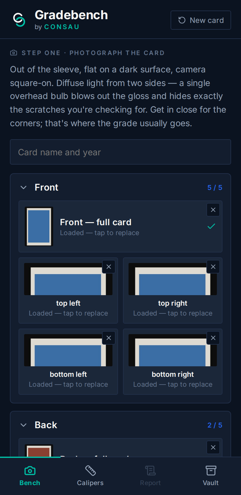
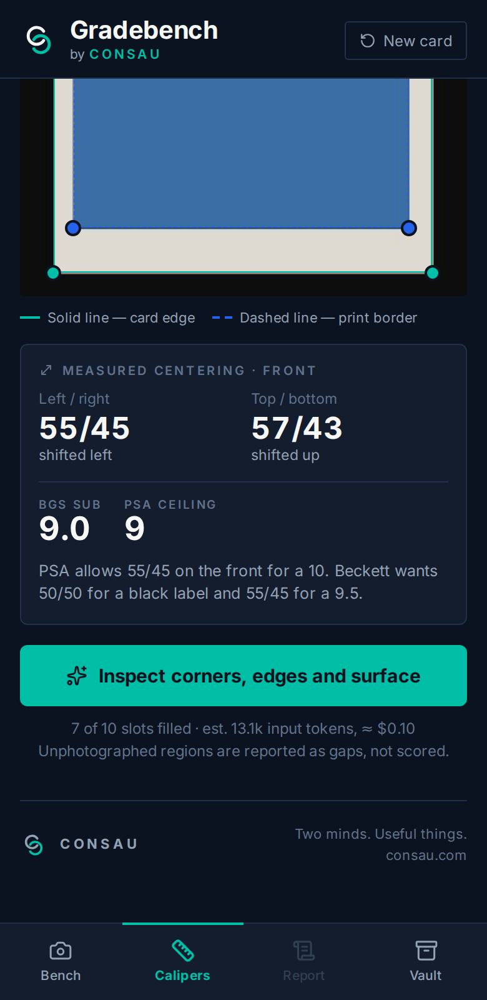
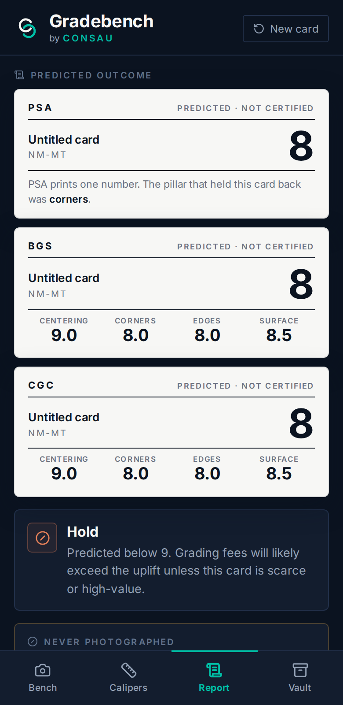

Know before you send.
Grading a card costs money and weeks of waiting, and you find out what you have only once it comes back. Gradebench is the bench check first: photograph the card, seat a pair of calipers on the print border, and get a predicted PSA, BGS and CGC grade with the reasoning shown — so you can decide what actually goes in the envelope.



Most things on this site are a link you click. Gradebench isn’t, and that’s deliberate: it holds an Anthropic API key and calls the model server-side. This site is static hosting — there is no server here to keep a key in, so a hosted version would either ship the key to every visitor or need a backend standing behind it.
So it ships as source you run locally, and the key stays in a .env file on your
own machine. It needs Node 20 or newer.
# from a clone of jsipuk/jsipuk.github.io
cd gradebench-src
npm install
cp .env.example .env # add your ANTHROPIC_API_KEY
npm run dev # http://localhost:5173Source and full notes: github.com/jsipuk/jsipuk.github.io → gradebench-src
Beckett has never published its final-grade formula. The rules here are reverse-engineered from submission data by the collecting community and are wrong often enough to matter, and PSA’s published centering figures cover the 10 and 9 thresholds only. The front-versus-back weightings are our own judgement on top of that.
A phone photo also cannot see everything a loupe under angled light can. Treat every number as a pre-screen for deciding what to send — not a grade.